Blog
Acquisition, SEO et GEO — des articles écrits à partir de missions réelles, sans grille tarifaire déguisée en contenu ni remplissage.
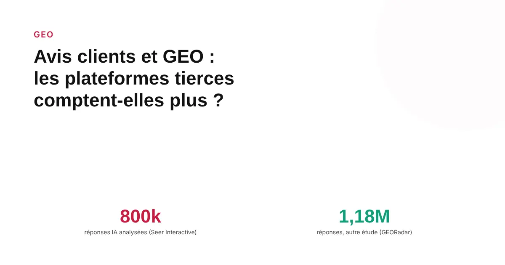
Avis clients et GEO : les plateformes tierces comptent-elles plus que votre propre site aux yeux des IA ?
Trustpilot, G2, Reddit : plusieurs études sur des centaines de milliers de réponses IA montrent que les plateformes d'avis tierces sont citées plus souvent qu'un site de marque. Ce que ça signifie concrètement pour votre présence en ligne.
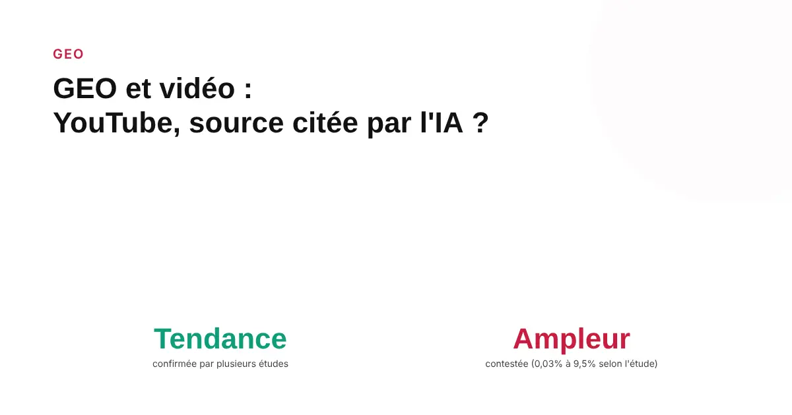
GEO et vidéo : YouTube est-il une source que les IA génératives citent ?
Plusieurs études 2026 s'accordent sur une tendance (Perplexity et Google AI Overviews citent YouTube bien plus que ChatGPT), mais pas sur son ampleur. Ce qui est solide, et ce qui ne l'est pas.
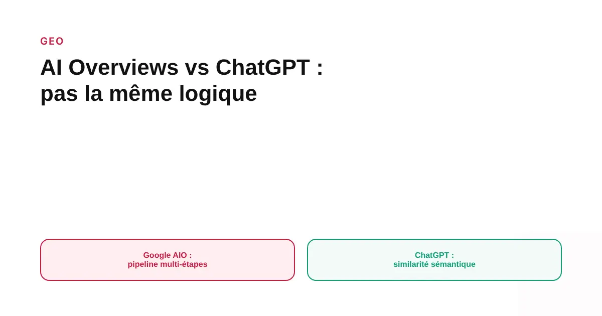
Comment Google AI Overviews choisit ses sources, et pourquoi ce n'est pas la même logique que ChatGPT
Les AI Overviews de Google et ChatGPT ne citent pas les mêmes types de sources, ni selon la même logique. Ce que les études indépendantes montrent sur ces deux mécanismes de sélection, et pourquoi optimiser pour l'un ne garantit rien sur l'autre.
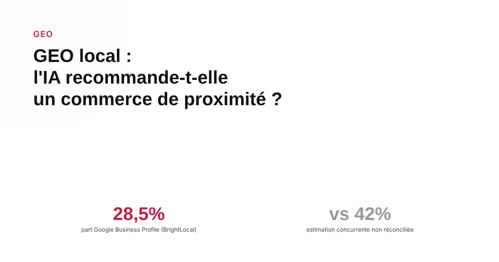
GEO local : les IA génératives recommandent-elles vraiment des commerces de proximité ?
ChatGPT et Perplexity recommandent beaucoup moins de commerces locaux que le 3-pack local de Google, selon plusieurs études 2026. Ce que ça change pour une PME, et ce qui reste à vérifier.
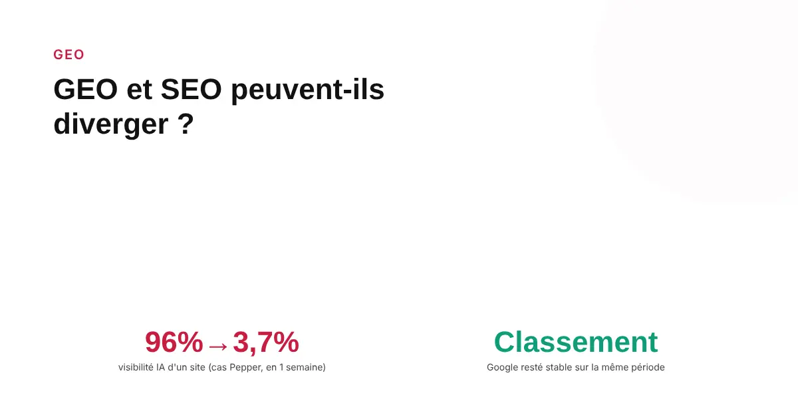
GEO et SEO peuvent-ils diverger ? Un site qui perd en visibilité IA sans perdre son classement Google
Des cas documentés montrent une visibilité IA qui chute sans changement de classement Google, et inversement. Les mécanismes identifiés : reshuffle de modèle, artefact de mesure, ou vraie divergence.
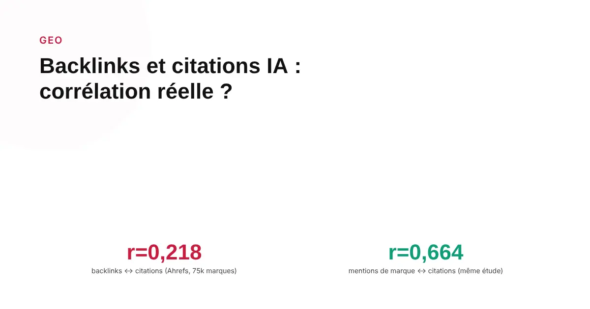
Backlinks et citations IA : les deux logiques se recoupent-elles vraiment ?
Une étude trouve les backlinks faiblement corrélés aux citations IA, une autre les classe en facteur numéro un. Ce que plusieurs analyses contradictoires de 2025-2026 révèlent sur le vrai rôle des liens entrants en GEO.
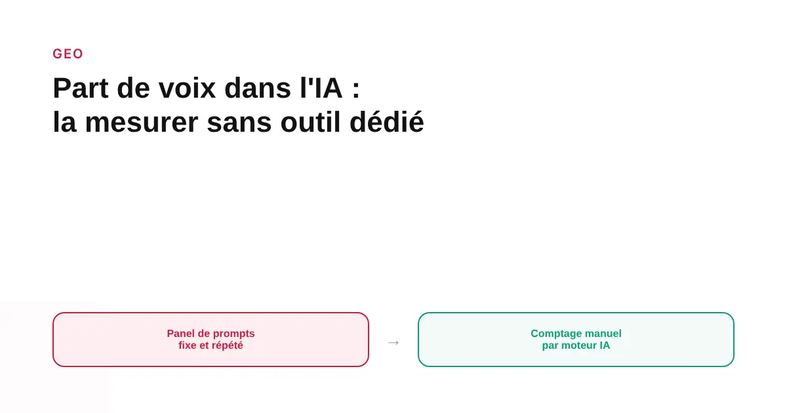
Part de voix dans les réponses IA : comment la mesurer sans outil dédié
Aucun organisme ne standardise encore la part de voix dans les réponses IA. La méthode manuelle que les praticiens utilisent en attendant — et ses limites à connaître avant de s'y fier.
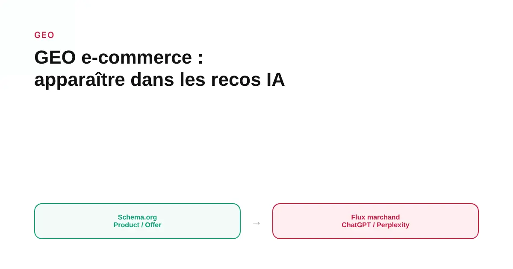
GEO pour l'e-commerce : apparaître dans les recommandations produit de ChatGPT et Perplexity
Un flux Google Shopping impeccable ne garantit pas qu'un produit apparaisse quand un client demande une recommandation à ChatGPT ou à Perplexity. Les deux assistants ne piochent pas leurs données au même endroit — ni selon la même logique.
Écrire pour les IA génératives : le contenu doit-il avoir un format spécial pour être cité ?
Une étude de Princeton, Georgia Tech et l'Allen Institute, publiée à la conférence KDD 2024, a testé en conditions contrôlées ce qui augmente vraiment les chances d'être cité par les IA génératives. Le bourrage de mots-clés classique en sort grand perdant.
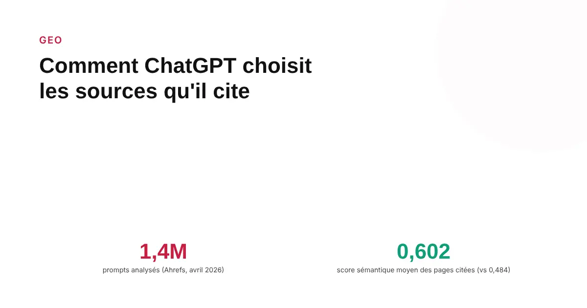
Comment ChatGPT choisit les sources qu'il cite : ce que les études montrent
ChatGPT ne cite qu'environ la moitié des pages qu'il consulte. Une étude Ahrefs sur 1,4 million de prompts, publiée en avril 2026, isole ce qui distingue une page retenue d'une page écartée — et ce que ça implique pour qui veut être cité.
SEO négatif : ce que c'est vraiment, et ce qu'on peut faire contre
« Est-ce qu'un concurrent peut saboter mon référencement avec de faux liens ? » La peur du SEO négatif reste vivace, mais la réponse de Google à cette question précise est plus rassurante que ce que beaucoup de propriétaires de site croient encore.
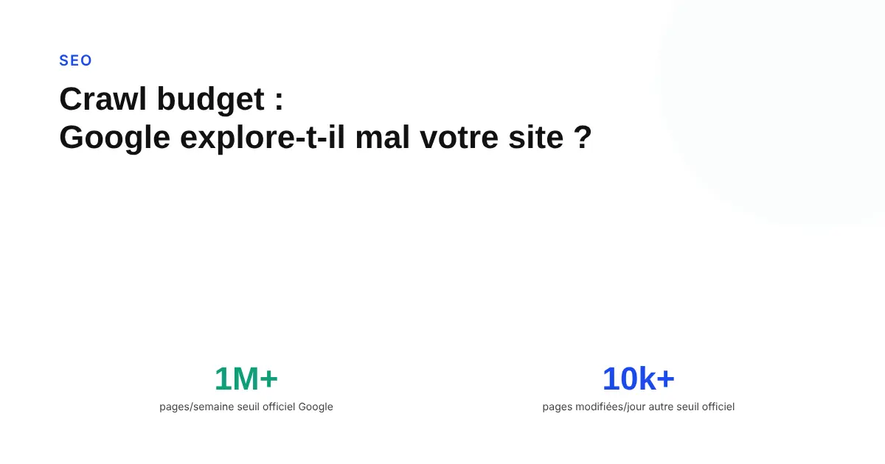
Crawl budget : comment savoir si Google explore mal votre site, et pourquoi ça compte
Le crawl budget est un sujet souvent mal calibré : beaucoup de petits sites s'en inquiètent sans raison, tandis que de vrais problèmes passent inaperçus sur des sites qui devraient s'en préoccuper. Ce que Google en dit officiellement, et comment savoir si ça vous concerne vraiment.
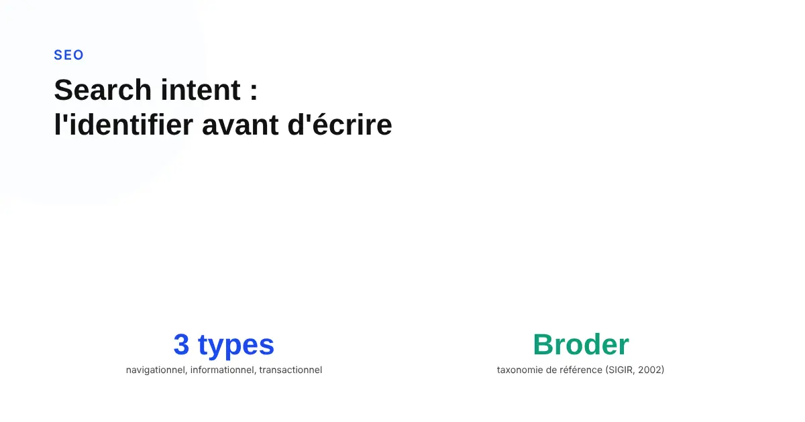
Search intent : comment l'identifier avant d'écrire, pour éviter de rater sa cible
Un contenu bien écrit sur un mot-clé à fort volume peut quand même ne jamais convertir ni même se positionner durablement, pour une seule raison : il ne correspond pas à ce que les utilisateurs cherchent réellement derrière cette requête.
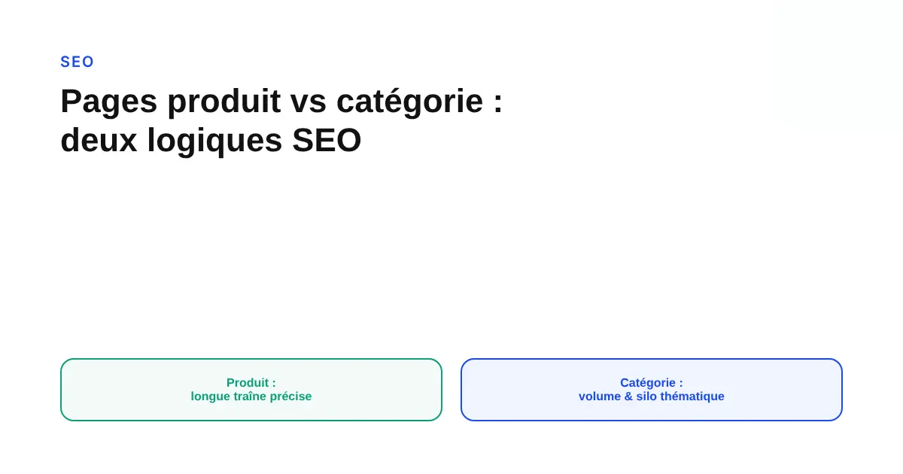
Pages produit vs pages catégorie en e-commerce : comment les optimiser différemment
La plupart des sites e-commerce mettent tout leur soin éditorial sur leurs fiches produit, alors que ce sont souvent leurs pages catégorie qui portent l'essentiel du trafic organique. Les deux ne répondent pas à la même intention de recherche, et ne se traitent pas de la même façon.
SEO pour les images : alt text, compression, et visibilité dans Google Images
« L'alt text est important pour le SEO », « l'alt text n'est pas une balle magique » : les deux phrases viennent de porte-parole officiels de Google, à deux ans d'intervalle. Ce n'est pas une contradiction gratuite — c'est que la question elle-même est mal posée.
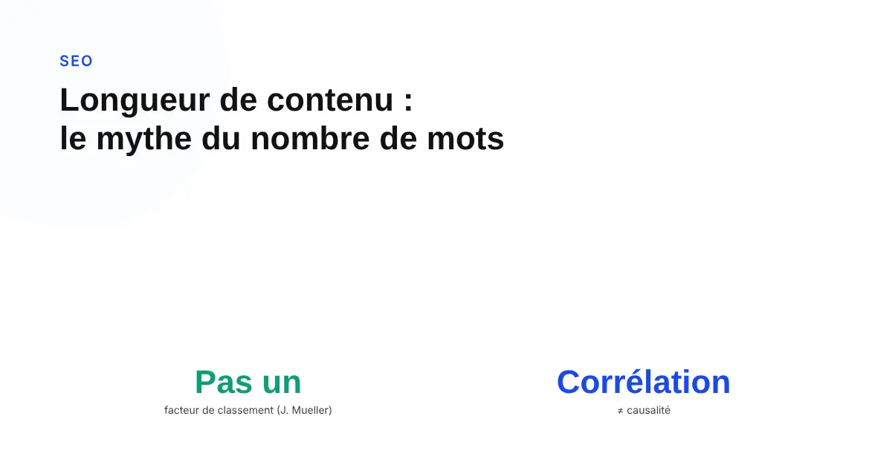
Longueur de contenu et SEO : pourquoi le nombre de mots n'est pas ce qui compte
« Il faut au moins 2000 mots pour ranker » revient dans presque tous les briefs de contenu. Google, par la voix de John Mueller, a démenti cette idée à plusieurs reprises. Pourquoi le mythe persiste malgré tout, et ce qui compte réellement à sa place.
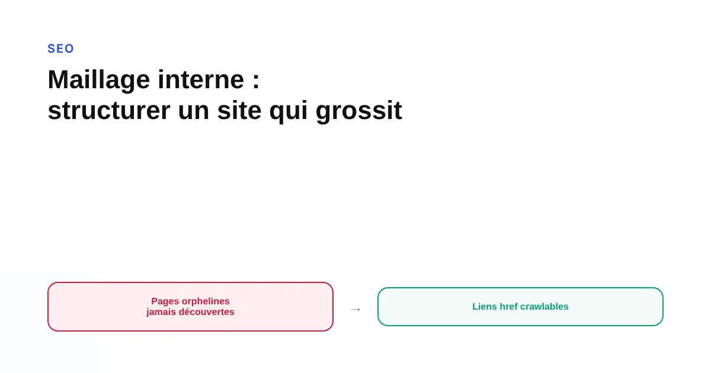
Maillage interne : la méthode pour structurer les liens internes d'un site qui grossit
Un site qui grossit accumule souvent des pages que plus personne ne relie depuis le reste du contenu. Google le dit sans détour : ses robots découvrent les pages par les liens. La méthode pour auditer et restructurer un maillage interne qui a cessé de suivre la croissance du site.
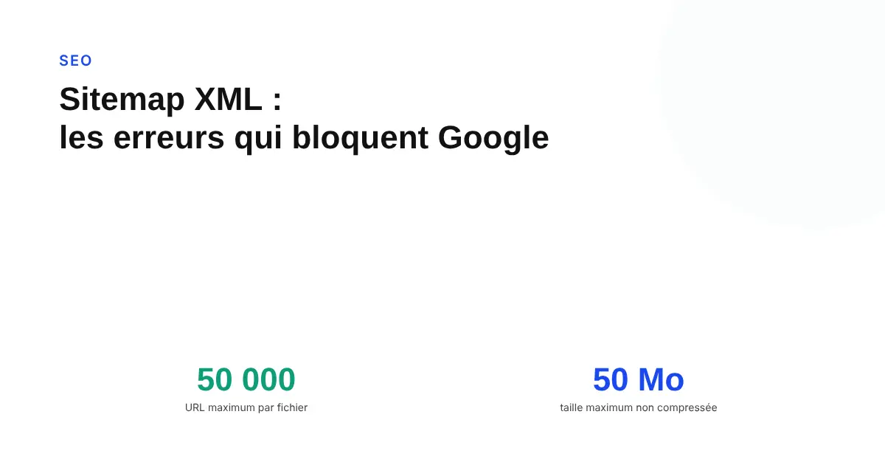
Sitemap XML : les erreurs qui empêchent Google de l'utiliser correctement
Un sitemap XML mal construit ne provoque pas d'erreur visible : il se contente de ne servir à rien. Les limites précises et les erreurs documentées par Google Search Central, pour un fichier qui remplit vraiment son rôle.
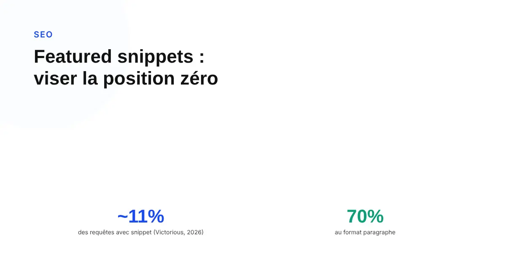
Featured snippets : comment apparaître en position zéro en 2026
La position zéro fascine autant qu'elle est mal comprise : rare, concentrée sur un format précis, et réservée aux pages qui sont déjà bien classées. Ce qui est établi, et ce qui n'est qu'une heuristique de vendeur SEO non confirmée.
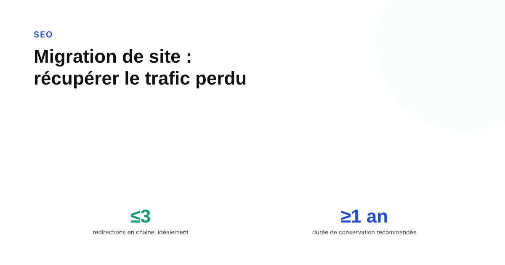
Comment récupérer le trafic perdu après une migration de site : la checklist
Changement de nom de domaine, passage en HTTPS, refonte complète : une migration fait presque toujours chuter le trafic. La documentation officielle de Google dit précisément comment limiter la casse — et ce qui transforme une baisse temporaire en perte définitive.
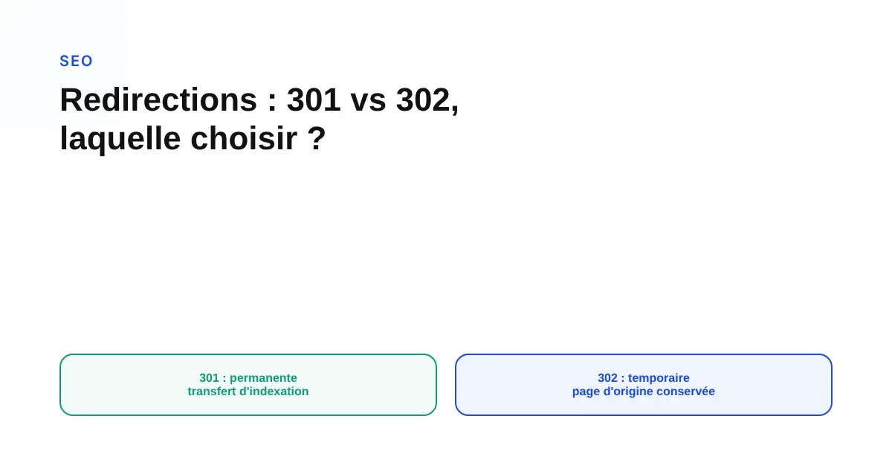
Redirections 301 vs 302 : laquelle choisir, et l'erreur qui fait perdre le jus SEO
Google traite les redirections 301 et 302 différemment pour l'indexation, mais la question du transfert de « jus SEO » reste mal comprise. Ce que dit la documentation officielle, et l'erreur la plus fréquente.
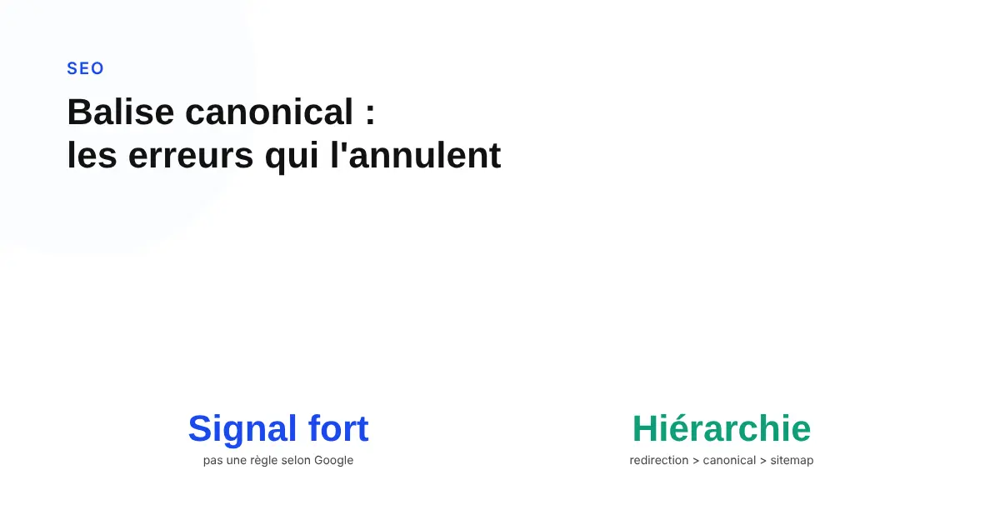
Balise canonical : les erreurs de configuration qui annulent complètement son effet
Google traite rel=canonical comme un signal, pas un ordre absolu. Les erreurs de configuration qui le poussent à l'ignorer complètement, listées par Google lui-même.
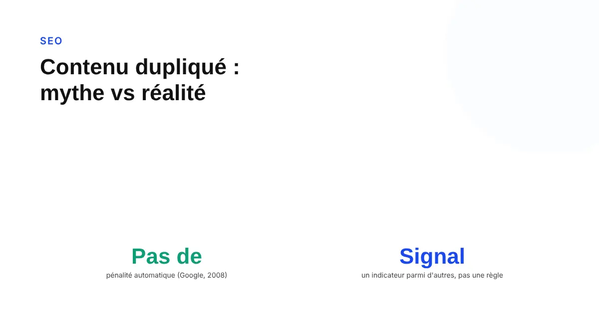
Contenu dupliqué : quand c'est vraiment un problème SEO, et quand ça ne l'est pas
Il n'existe pas de « pénalité contenu dupliqué » chez Google, qui le dit depuis 2008. Ce qui se passe réellement en cas de duplication, et le vrai risque à surveiller.
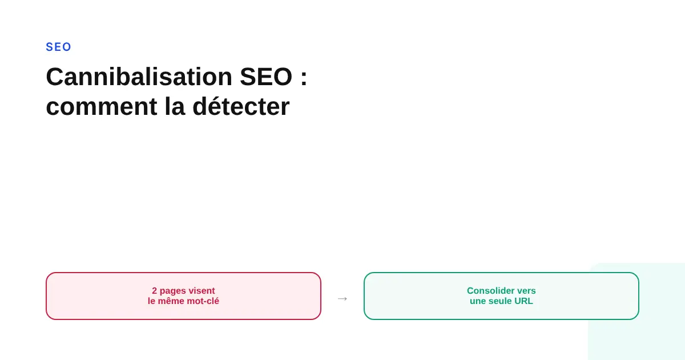
Cannibalisation SEO : comment la détecter et la corriger quand deux pages se font concurrence
Deux pages qui se battent pour la même requête ne se partagent pas le trafic : elles le diluent toutes les deux. La méthode pour détecter une cannibalisation SEO dans Search Console, et les trois façons de la corriger.
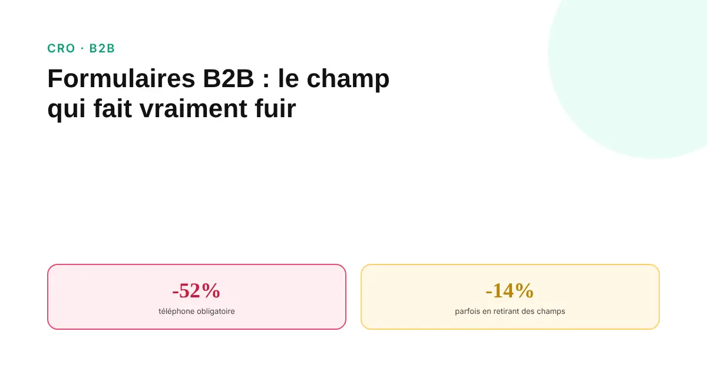
Formulaires B2B : le champ qui fait vraiment fuir un prospect (et celui qui ne change rien)
« Plus un formulaire est court, plus il convertit » n'est vrai qu'à moitié. Ce qu'une vraie étude contrôlée a mesuré sur le champ téléphone, et pourquoi raccourcir un formulaire peut aussi faire baisser la conversion.
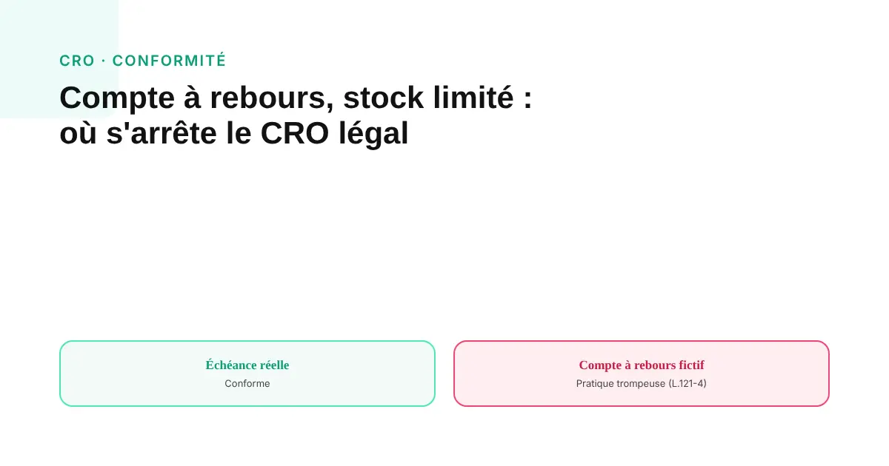
Compte à rebours, stock limité : où s'arrête le CRO légal en e-commerce
Un compte à rebours qui ne correspond à aucune vraie échéance est une pratique commerciale trompeuse en droit français et européen, pas juste une question d'éthique marketing. La ligne précise entre urgence réelle et dark pattern.
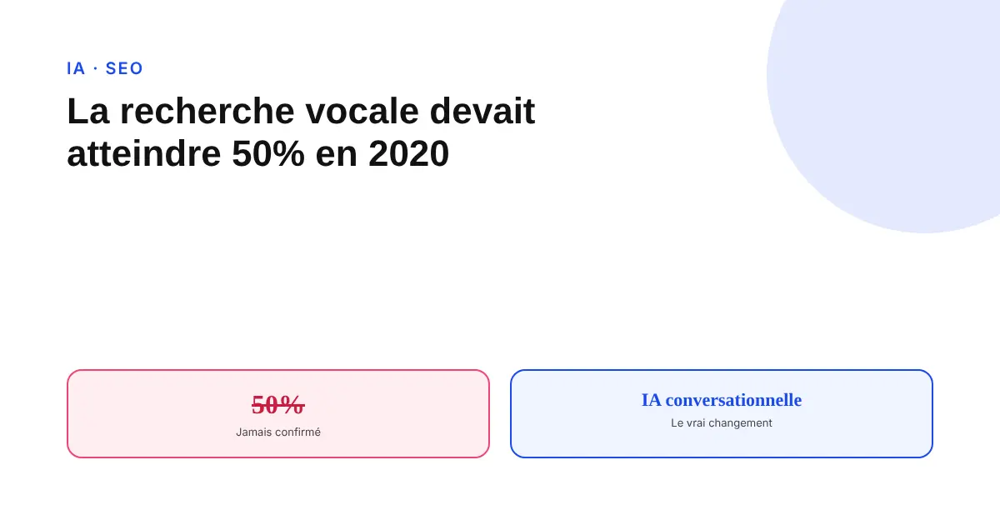
La recherche vocale devait représenter 50 % des requêtes : que s'est-il passé ?
La prédiction la plus citée du SEO n'a jamais été confirmée, et sa source a même été déformée en chemin. Ce qui est réellement arrivé à la recherche vocale, et ce qui compte vraiment en 2026 avec l'IA conversationnelle.
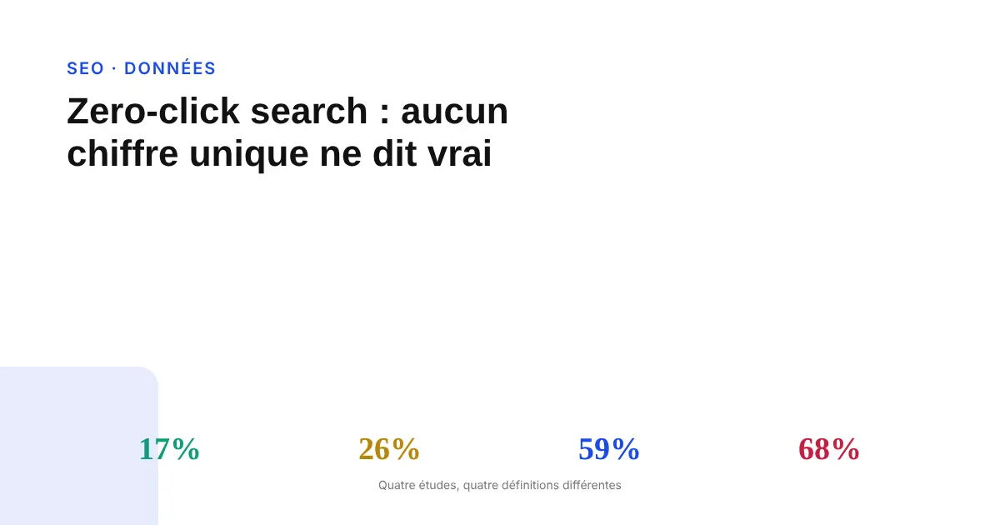
Zero-click searches : pourquoi aucun chiffre unique ne dit la vérité
17 %, 26 %, 59 %, 68 % : les études sur les recherches sans clic se contredisent ouvertement. La raison tient à la définition utilisée, pas à une évolution réelle. Ce qui est solide, et ce qui ne l'est pas.
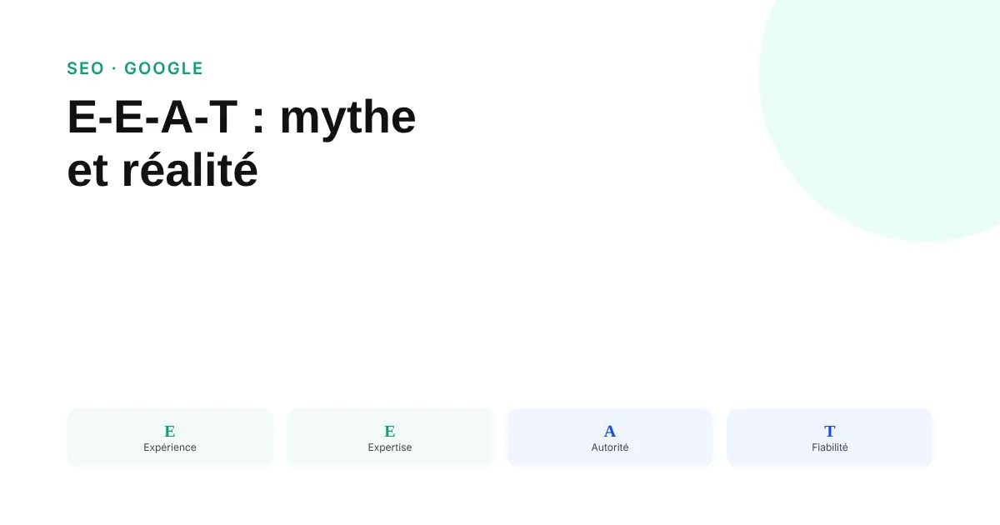
E-E-A-T : ce que Google vérifie vraiment, et ce qui relève du mythe SEO
« Score E-E-A-T », « algorithme E-E-A-T », « bio d'auteur obligatoire » : trois affirmations qui circulent largement, et que Google a démenties explicitement. Ce que le concept désigne réellement.
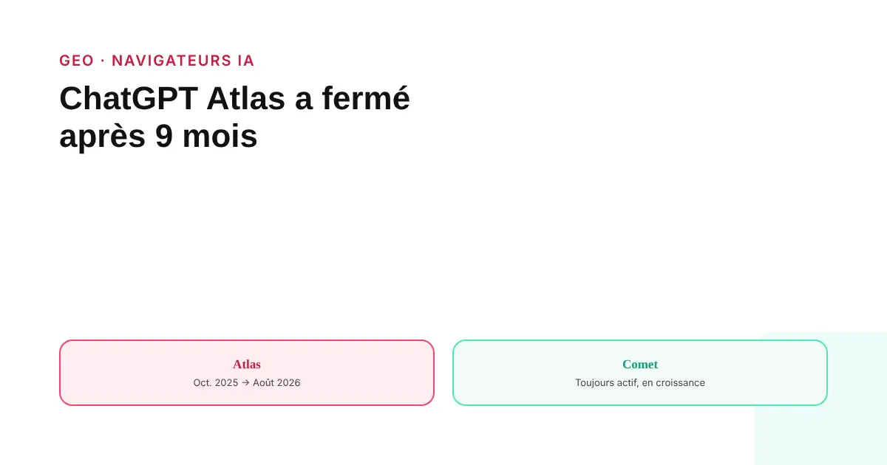
ChatGPT Atlas a fermé après 9 mois : ce que ça dit des navigateurs IA agentiques
OpenAI a fermé son navigateur Atlas en août 2026. Perplexity Comet, lui, continue de grandir. Ce qui est confirmé, et le vrai point d'attention pour votre analytics.
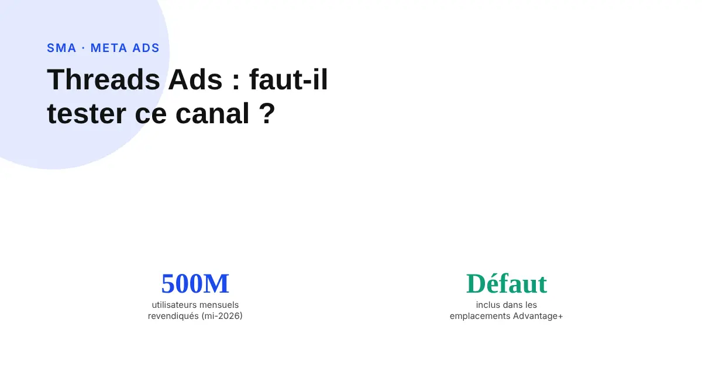
Threads Ads : faut-il tester ce nouveau canal publicitaire Meta en 2026 ?
La publicité sur Threads est désormais déployée mondialement et activée par défaut dans Meta Ads Manager. Ce qui est confirmé, et comment évaluer le canal sans se fier aux chiffres qui circulent.
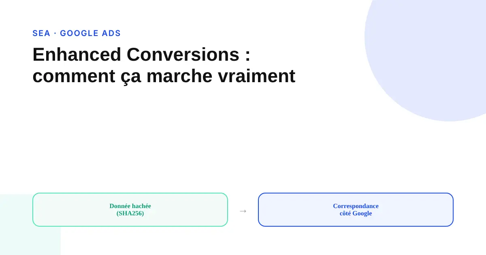
Enhanced Conversions sur Google Ads : comment ça marche, et les erreurs qui cassent le signal
Les conversions améliorées récupèrent du signal perdu aux restrictions cookies. Mécanique réelle, les deux modes Web et Leads, et les erreurs de configuration les plus fréquentes.
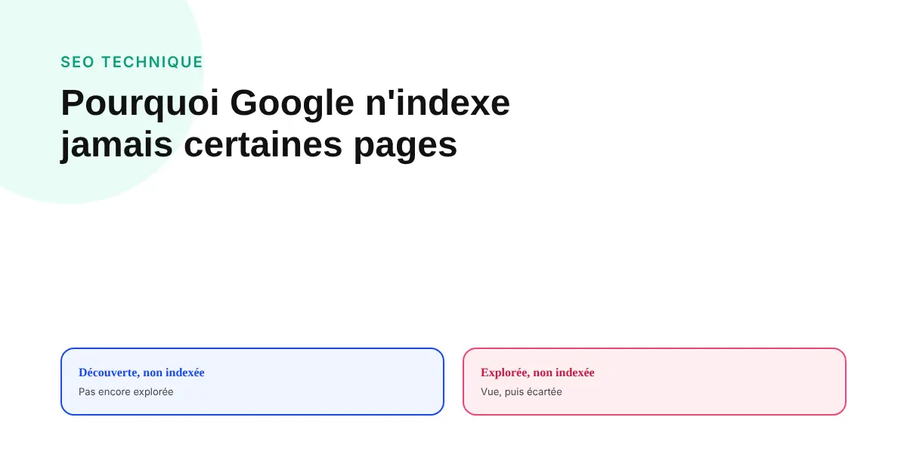
Pourquoi Google n'indexe jamais certaines de vos pages
« Découverte - actuellement non indexée » et « Explorée - actuellement non indexée » ne veulent pas dire la même chose dans Search Console. Les causes et les leviers d'action réels pour chaque statut.
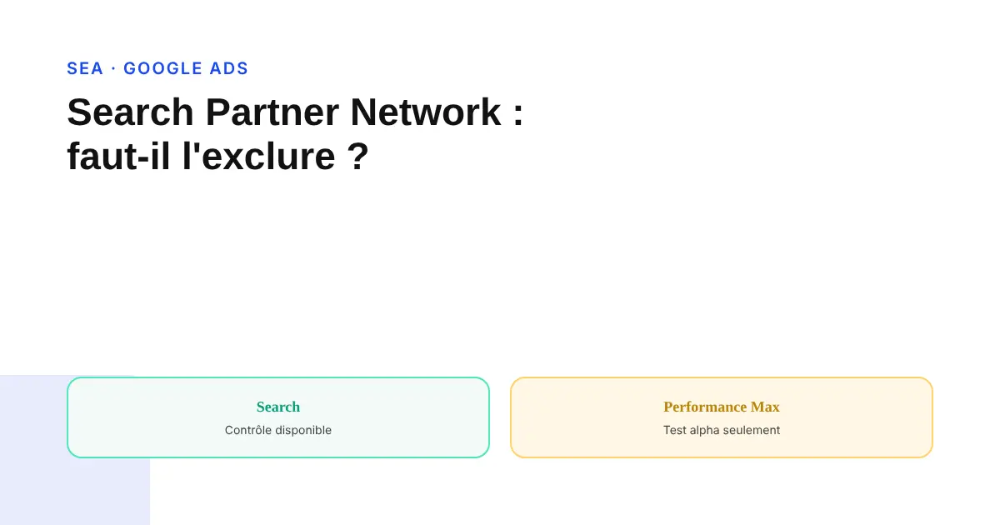
Search Partner Network : faut-il l'exclure de vos campagnes Google Ads ?
Beaucoup d'annonceurs savent qu'il existe, peu savent vraiment ce qu'il couvre ni s'ils peuvent le désactiver selon le type de campagne.
Vitesse de chargement mobile et conversion : le seuil qui fait vraiment mal
Trois secondes. C'est le seuil au-delà duquel la probabilité de perdre un visiteur mobile s'accélère nettement.
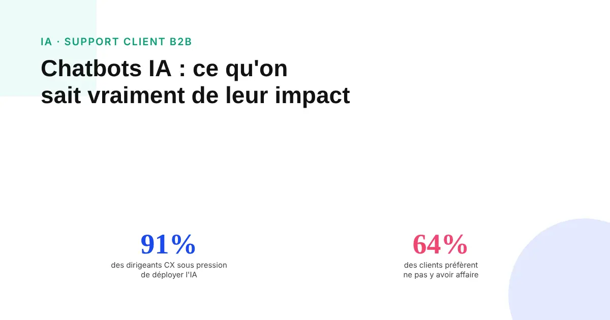
Chatbots IA en support client B2B : ce qu'on sait vraiment sur leur impact
La pression interne pour déployer l'IA en support client n'a jamais été aussi forte. Le sentiment client, lui, raconte une histoire plus nuancée.
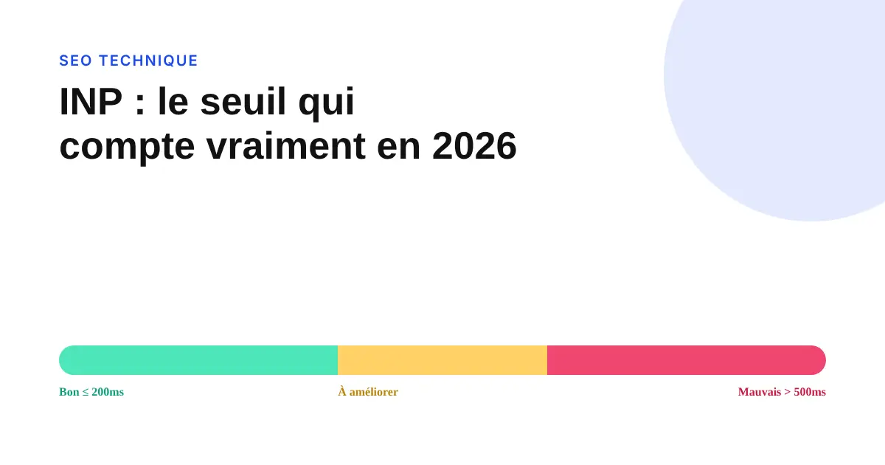
INP et Core Web Vitals : le seuil qui compte vraiment en 2026
Une rumeur circule sur les blogs SEO : un seuil INP abaissé à 150 ms depuis 2026. Elle ne figure dans aucune documentation Google.
Google AI Mode arrive en France : ce que ça change pour votre visibilité
La France a été le dernier grand marché européen à recevoir les AI Overviews et AI Mode. Les premières données françaises d'impact commencent à arriver.
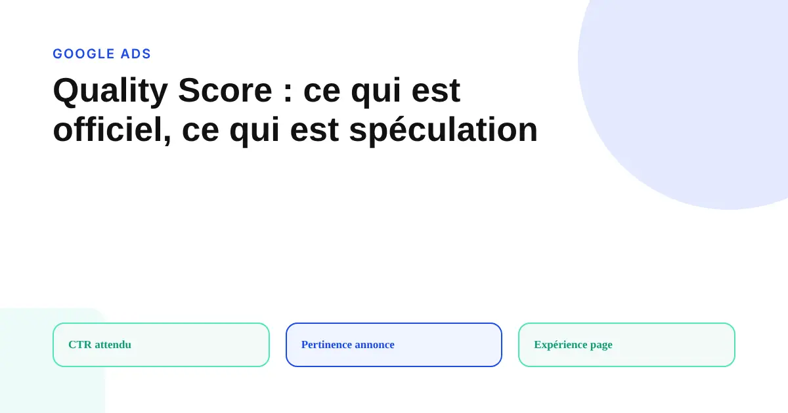
Quality Score Google Ads : ce qui est officiel, ce qui est spéculation
Tout le monde cite le Quality Score. Peu distinguent ce que Google documente réellement de ce qu'une agence a mesuré une fois sur un compte et généralisé depuis.
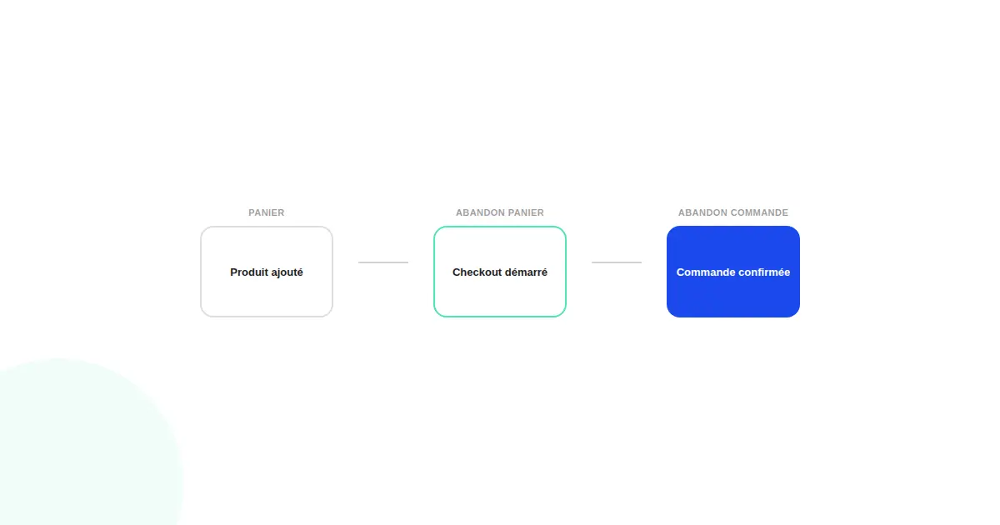
Abandon de panier vs abandon de commande : la confusion qui fausse vos priorités CRO
Le chiffre de 70 % d'abandon souvent cité mélange deux problèmes différents : quitter le panier avant le checkout, ou abandonner pendant le checkout. Les solutions ne sont pas les mêmes.
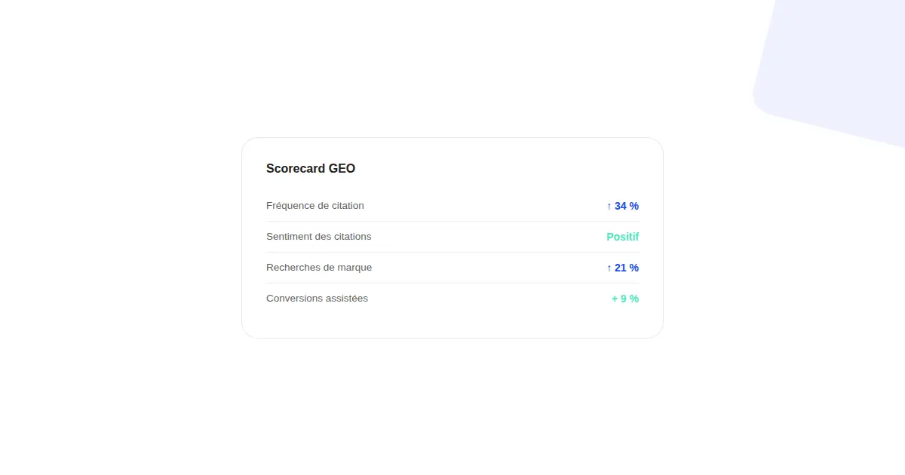
Mesurer le ROI du GEO : les indicateurs qui remplacent (ou complètent) le trafic organique
Le GEO ne se mesure pas comme le SEO classique : une citation dans une réponse IA ne génère pas toujours de clic. Les indicateurs concrets pour évaluer un travail de GEO sans se fier au seul trafic.
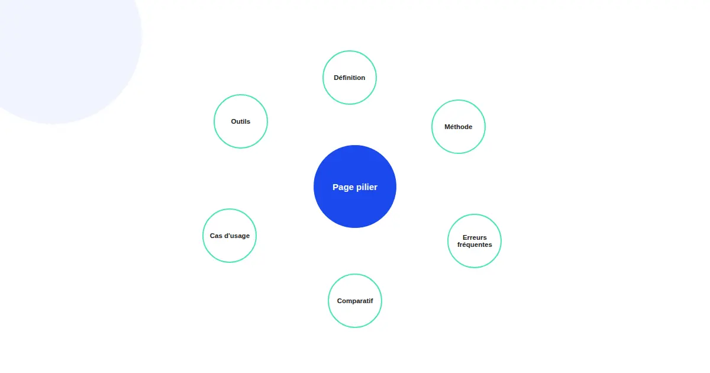
Topical authority : la méthode pour construire une autorité thématique qui tient la route
Publier plus de contenu ne suffit pas à construire une autorité thématique. La méthode concrète en 4 étapes pour structurer un cocon de contenu qui couvre réellement un sujet, sans cannibalisation.
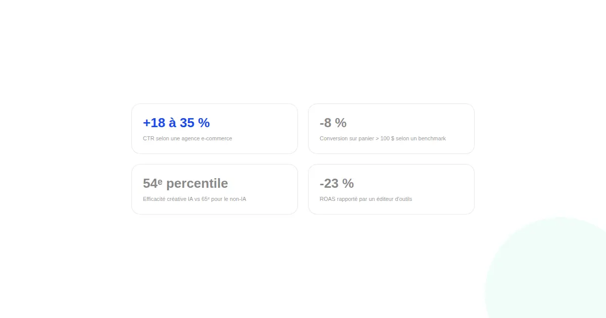
Créations publicitaires par IA (Meta Advantage+) : ce que les chiffres qui se contredisent révèlent
CTR en hausse de 12 à 35 %, mais conversion et ROAS en baisse selon d'autres sources : les chiffres sur la création publicitaire par IA de Meta se contredisent. Comment lire ces claims et tester chez vous.
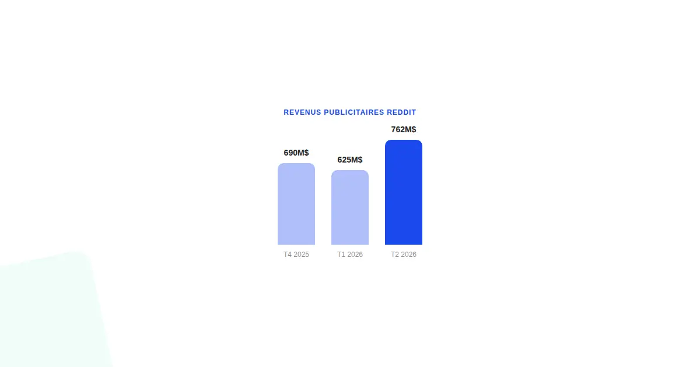
Reddit Ads en 2026 : d'un canal de niche à un canal qu'on ne peut plus ignorer
Revenus publicitaires Reddit en forte croissance trimestre après trimestre en 2026. Ce que ces chiffres veulent dire pour votre mix média, et pour qui ce canal a vraiment un sens.
Les core updates Google de 2026 : le calendrier et ce qu'il faut vraiment surveiller
Deux core updates confirmées en 2026 (mars et mai), un rythme plus dense que les années précédentes. Le calendrier exact, et pourquoi la durée du déploiement ne dit rien de son impact sur votre site.
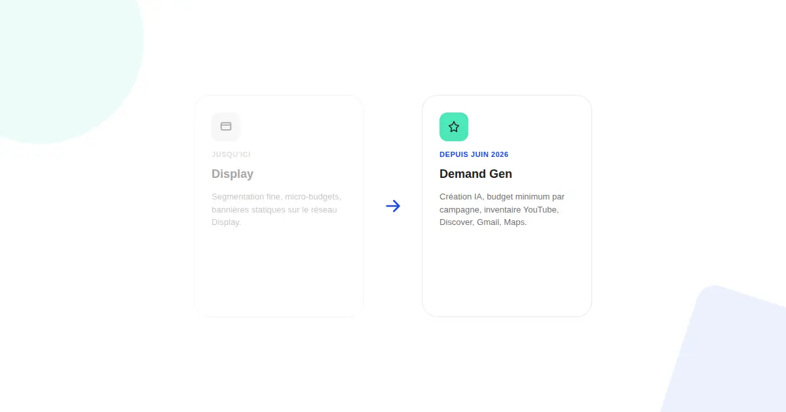
Google Ads Demand Gen : ce qui change quand Display disparaît
Depuis juin 2026, Google migre les campagnes Display vers Demand Gen. Ce que vous gagnez (création IA, nouveaux inventaires), ce que vous perdez, et ce qu'il faut vérifier avant la bascule.
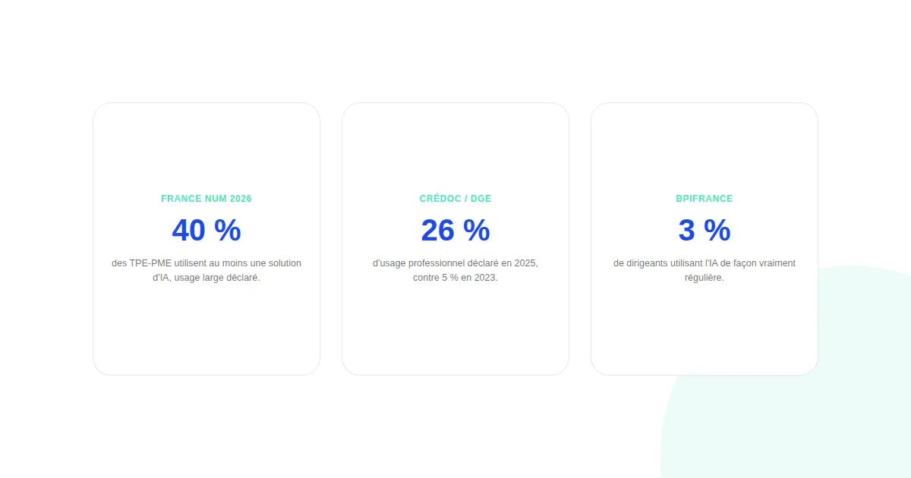
IA dans les PME françaises : pourquoi les chiffres d'adoption se contredisent autant
40 %, 26 %, ou seulement 3 % de dirigeants qui utilisent l'IA régulièrement : les études sur l'adoption de l'IA dans les PME françaises donnent des chiffres très différents. Comprendre pourquoi évite de construire une stratégie sur le mauvais repère.
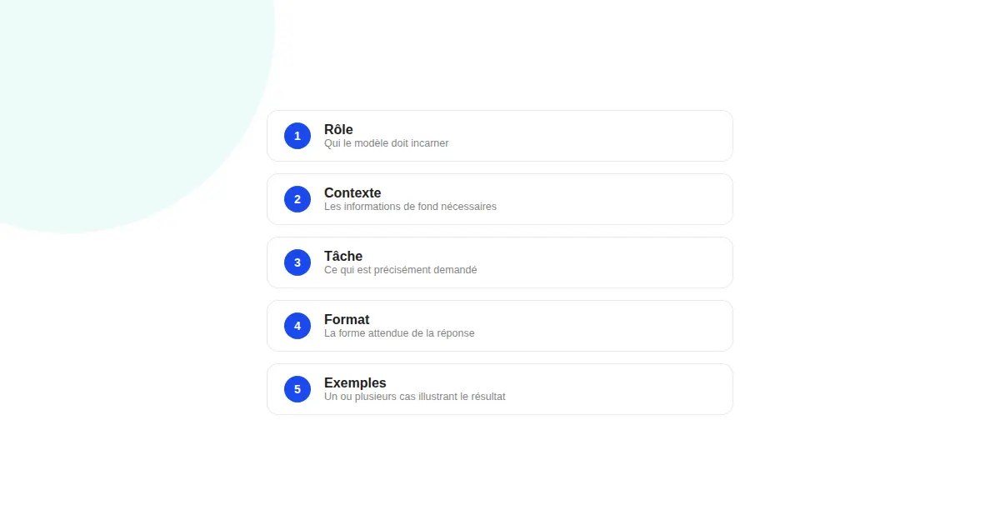
Prompt engineering pour le marketing : compétence de base ou effet de mode ?
Écrire un bon prompt n'a rien d'instinctif, et ça ne s'improvise plus à l'échelle d'une équipe. La structure en 5 parties qui revient dans la plupart des guides sérieux, et comment savoir si votre équipe a vraiment besoin de la formaliser.
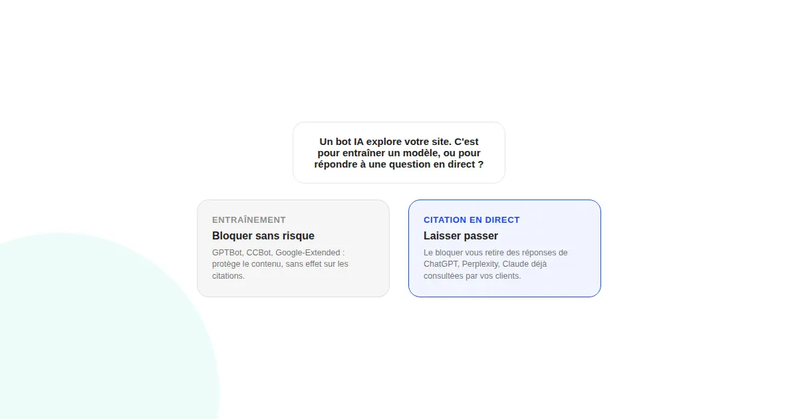
robots.txt ou llms.txt : faut-il bloquer les crawlers IA sur son site ?
Bloquer un bot IA peut protéger votre contenu, ou vous retirer des réponses de ChatGPT et Perplexity — tout dépend du type de bot. Comment distinguer crawlers d'entraînement et crawlers de citation avant de toucher à votre robots.txt.
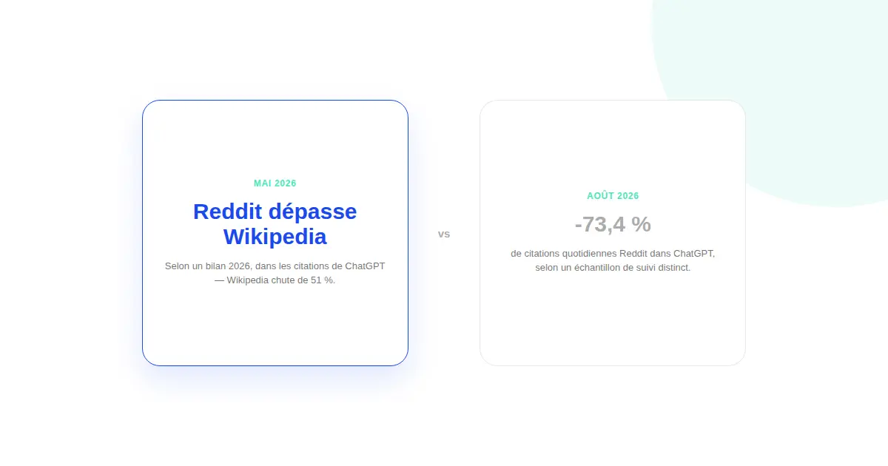
Reddit et visibilité dans ChatGPT : le levier est-il en train de s'effondrer ?
Une étude dit que Reddit a dépassé Wikipedia dans les citations ChatGPT. Une autre mesure l'inverse quelques mois plus tard. Ce qu'on sait vraiment sur Reddit comme levier de visibilité IA, et ce qu'on ne sait pas.
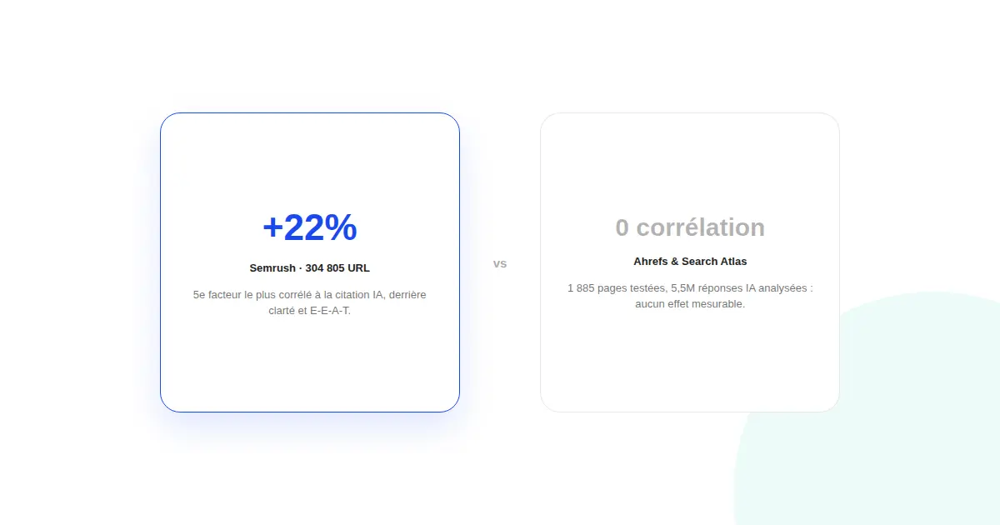
Schema markup et citations IA : ce que les études disent vraiment
Les agences promettent que le schema markup fait grimper vos citations dans ChatGPT et les AI Overviews. Les études indépendantes, elles, ne sont pas d'accord entre elles. Voici ce qu'on peut en tirer sans se fier à une seule source.
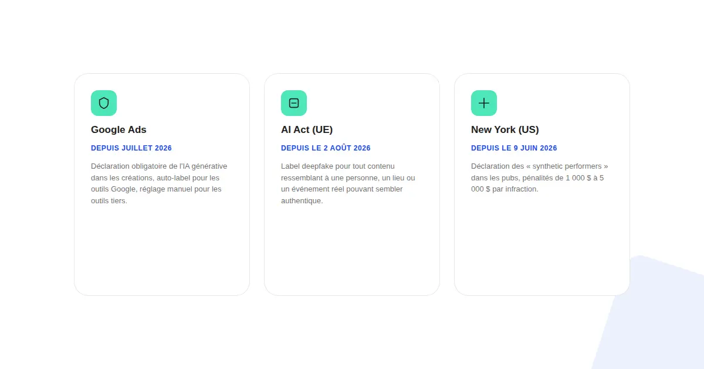
Disclosure IA obligatoire dans vos pubs : ce qui change concrètement en 2026
La question « dois-je déclarer cette création IA ? » a trois réponses différentes selon où vous diffusez. Google Ads, l'AI Act européen et une loi new-yorkaise imposent chacun leurs propres règles — et le piège est rarement la déclaration elle-même.
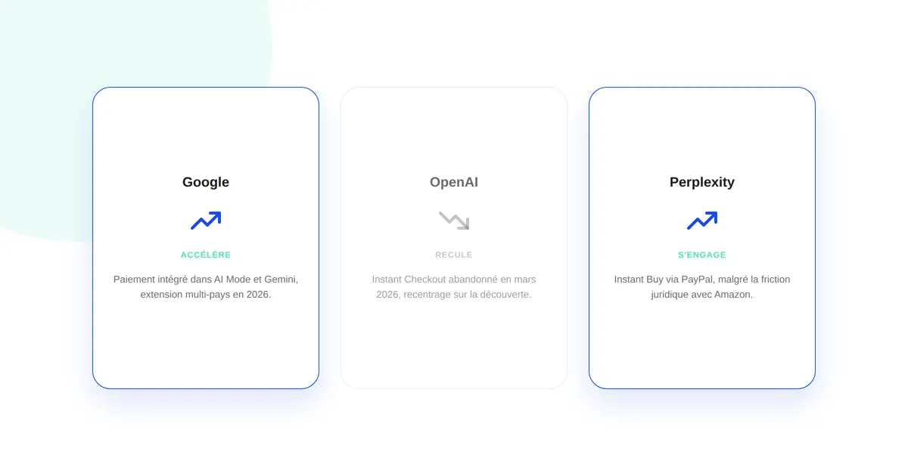
Achat direct dans ChatGPT, Perplexity, Google AI Mode : où en est l'agentic commerce
Google, Perplexity et OpenAI avancent à des vitesses très différentes sur l'achat intégré aux IA conversationnelles. Ce qui fonctionne déjà, ce qui recule, et ce qu'un e-commerçant doit vraiment préparer en premier.
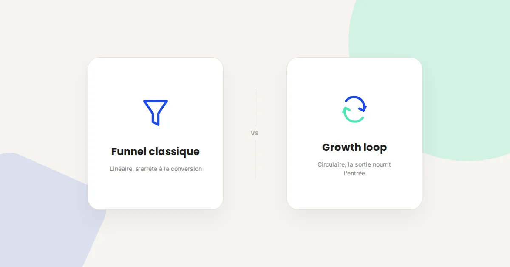
Growth loops vs funnel marketing classique : repenser l'acquisition
Coupez le budget publicitaire : un business 100% funnel s'arrête net, un business avec un vrai growth loop ralentit mais continue. Ce que cette différence de comportement change dans vos priorités.
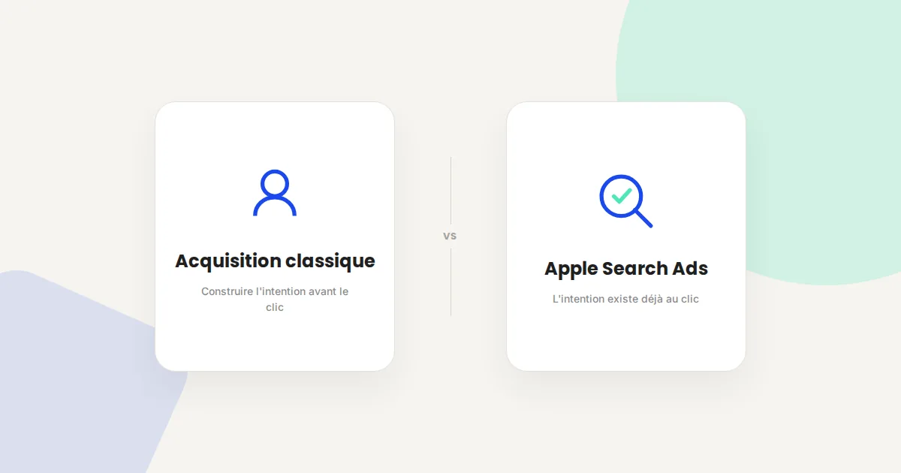
Apple Search Ads : le levier d'acquisition mobile sous-exploité
Apple Search Ads reste largement sous-exploité face à Google et Meta. Pourquoi ce canal mérite une vraie stratégie, et comment le structurer.
Black Friday 2026 : le calendrier de préparation Google Ads en 6 semaines
Le Black Friday se prépare six semaines avant, pas la veille. Le calendrier concret semaine par semaine pour arriver au 27 novembre avec des campagnes Google Ads prêtes, pas improvisées.
Page de prix : les erreurs qui font fuir un prospect B2B
La page de prix reçoit un trafic rare et déjà très qualifié en B2B — et c'est pourtant l'une des pages les plus négligées d'un site. Les erreurs les plus fréquentes qui y coûtent le plus cher.
Community management vs publicité payante : où mettre l'énergie limitée d'une petite équipe
Avec une ressource marketing limitée, faut-il investir dans l'animation organique des réseaux ou dans la publicité payante ? L'arbitrage concret selon la maturité et les objectifs de l'entreprise.
Marketing Mix Modeling : une alternative au tracking pour les moyennes entreprises
Le Marketing Mix Modeling analyse l'impact des canaux sans dépendre du tracking individuel. Ce qu'il permet vraiment, ses limites, et à partir de quelle taille d'entreprise il devient pertinent.
Google Business Profile : le levier local que les PME sous-exploitent
Une fiche Google Business Profile mal tenue coûte de la visibilité locale bien avant que le SEO classique n'entre en jeu. Ce qui fait vraiment la différence sur ce levier trop souvent négligé.
Contenu généré par IA et Google : ce que dit vraiment la politique anti-spam
Google ne pénalise pas le contenu généré par IA en tant que tel. Ce que sa politique anti-spam sanctionne réellement, et pourquoi la confusion coûte cher à certaines équipes marketing.
Smart Bidding : ce qu'il faut vérifier avant de lui laisser le volant
Le Smart Bidding de Google Ads (tCPA, tROAS) peut très bien fonctionner, ou détruire une campagne saine en quelques jours. Ce qui détermine lequel des deux scénarios se produit chez vous.
Trust signals : ce qui rassure vraiment un visiteur avant l'achat
Badges de sécurité, avis clients, politique de retour : tous les éléments de réassurance ne se valent pas. Ce qui réduit réellement l'anxiété d'achat, et ce qui n'est que décoratif.
GEO multilingue : comment les IA génératives traitent votre marque dans une autre langue
Être bien cité par ChatGPT ou Perplexity en français ne garantit rien dans une autre langue. Ce que ça change concrètement pour une stratégie GEO multilingue, et pourquoi ce n'est pas juste une question de traduction.
Meta Ads : segmenter ses audiences sans tout miser sur le ciblage automatique
Meta pousse de plus en plus vers un ciblage automatisé qui gère tout à votre place. Ce qu'il vaut mieux garder sous contrôle, et ce qu'on peut raisonnablement lui laisser faire.
Consent Mode v2 : ce qui casse vraiment vos données si mal configuré
Consent Mode n'est pas une case à cocher dans Google Tag Manager — c'est ce qui détermine si Google peut modéliser les conversions que le consentement lui interdit de mesurer directement. Les erreurs les plus fréquentes, et comment les repérer.
Programmatic SEO : où s'arrête l'automatisation raisonnable
Générer des centaines de pages à partir d'un jeu de données peut construire une vraie visibilité SEO, ou construire un site que Google finit par sanctionner. La ligne de démarcation, concrètement.
Growth marketing IA pour petites équipes : le playbook sans data scientist ni budget d'agence
Pas besoin d'un data scientist ni d'un budget d'agence pour faire du growth marketing IA. Le playbook concret pour une petite équipe : outils accessibles, priorités, pièges à éviter.
Pourquoi vos prompts marketing ne donnent rien de bon (et comment les corriger)
Vos prompts marketing donnent des résultats génériques ou hors sujet ? Les 5 erreurs les plus fréquentes qui expliquent pourquoi, et comment les corriger concrètement.
Automatiser son reporting marketing avec l'IA sans usine à gaz : la méthode en 4 étapes
Automatiser son reporting marketing avec l'IA sans y passer plus de temps qu'avant. La méthode en 4 étapes : cadrer, connecter, automatiser, vérifier.
7 mythes sur le growth hacking IA qui coûtent cher aux équipes marketing
Non, l'IA ne remplace pas une stratégie growth. 7 mythes sur le growth hacking IA qui font perdre du temps et du budget aux équipes marketing, et ce qui fonctionne vraiment à la place.
Claude et ChatGPT en growth marketing : à utiliser ensemble, pas l'un contre l'autre
Claude et ChatGPT ne sont pas interchangeables pour un usage growth marketing, mais ils ne s'opposent pas non plus. Ce que chacun fait mieux, tâche par tâche : rédaction longue, brainstorm, données, intégrations MCP.
Agents IA marketing : ce qu'on peut vraiment leur confier en 2026 (et ce qu'il ne faut jamais leur laisser faire)
Rédaction, reporting, veille, réponses client : où en est vraiment la délégation à un agent IA en marketing en 2026 ? Ce qui fonctionne, ce qui casse encore, et où mettre la limite.
Semrush vs Ahrefs : quel outil SEO choisir en 2026
Suite tout-en-un ou spécialiste du backlink : Semrush et Ahrefs ne répondent pas au même besoin. Comparatif honnête pour choisir selon votre usage réel, pas selon la pub.
Growth marketing B2B SaaS vs e-commerce : deux logiques qu'on confond trop souvent
Un playbook growth pensé pour l'e-commerce échoue presque toujours tel quel en B2B SaaS, et inversement. Ce qui change vraiment entre les deux modèles, canal par canal.
First-party data : la checklist pour ne plus dépendre des cookies tiers
Google a fait marche arrière sur la suppression des cookies tiers, mais construire sa propre donnée first-party reste la stratégie la plus solide. La checklist pour s'y mettre.
Marketing d'influence et UGC : ce que la loi de 2023 a vraiment changé
La loi du 9 juin 2023 a posé un cadre légal clair au marketing d'influence en France. Ce qu'elle impose concrètement à une marque qui travaille avec des créateurs de contenu.
SEO local saisonnier en Savoie : structurer ses pages et son budget Ads
À Chambéry, Aix-les-Bains ou dans les stations savoyardes, la demande locale varie fortement selon la saison. Comment structurer ses pages ville et son budget Ads sans se faire piéger.
Retargeting : 4 idées reçues qui plombent vos campagnes de remarketing
Le retargeting reste efficace, mais mal réglé il use l'audience au lieu de la convertir. 4 idées reçues à corriger sur la fréquence, la fenêtre d'attribution et l'exclusion.
SEO international : la méthode hreflang sans les erreurs qui l'annulent
hreflang est l'attribut le plus mal implémenté du SEO technique. La méthode en 5 étapes pour l'installer correctement, et les erreurs qui annulent silencieusement son effet.
Matomo peut-il vraiment remplacer GA4 ? 4 idées reçues à corriger
Matomo est souvent présenté comme l'alternative RGPD à Google Analytics. Ce qui est vrai, ce qui est exagéré, et dans quels cas le changement a vraiment du sens.
Popups et exit-intent : les 5 erreurs qui les rendent contre-productifs
Un popup mal réglé fait fuir plus de visiteurs qu'il ne convertit. Les 5 erreurs les plus fréquentes sur les popups et exit-intent, et comment les corriger sans les supprimer.
CAC et LTV : la méthode pour savoir si votre acquisition est vraiment rentable
Un CAC qui baisse ne veut rien dire seul, une LTV qui monte non plus. La méthode en 5 étapes pour calculer les deux correctement et savoir si votre acquisition tient debout.
Email marketing et lifecycle automation : la checklist avant de lancer un scénario
Avant de lancer un scénario d'emails automatisés, ces points techniques et éditoriaux évitent les scénarios qui tournent en boucle, arrivent en spam, ou ne convertissent jamais.
Google Ads : les promotions automatiques passent en opt-out dès le 12 octobre 2026
Depuis le 12 octobre 2026, Google Ads extrait et affiche automatiquement des promotions tirées de votre site dans vos campagnes Search et Performance Max. Ce qui change, et comment le désactiver.
LinkedIn Ads ou Google Ads pour du B2B : comment trancher
LinkedIn Ads et Google Ads répondent à deux logiques différentes en B2B. Comparatif concret : ciblage, coût, cycle de vente, et comment les faire cohabiter plutôt que choisir.
Ce que le RGPD autorise vraiment en 2026
Le RGPD n'a pas changé, mais son application au tracking a bougé : cookies tiers, consentement, bannières CNIL. Ce qui est permis aujourd'hui, sans angélisme ni paranoïa.
Ce que les heatmaps révèlent vraiment sur le comportement de vos visiteurs
Une heatmap montre où les visiteurs cliquent et jusqu'où ils scrollent, mais jamais pourquoi. Ce que ces outils révèlent vraiment, et les pièges d'interprétation les plus fréquents.
Quand GA4 ne suffit plus pour analyser un produit
GA4 couvre bien le marketing digital mais atteint vite ses limites pour analyser un produit. Quand basculer vers un outil d'analytics produit comme Mixpanel, et pourquoi.
Bing Ads en B2B, le canal que personne ne regarde
Bing Ads reste largement délaissé alors qu'il touche une audience B2B avec un pouvoir d'achat plus élevé et une concurrence publicitaire nettement plus faible que Google Ads.
Les 5 premières secondes d'une pub YouTube décident de tout
Sur YouTube Ads, la majorité des spectateurs décident de rester ou de passer l'annonce en moins de 5 secondes. Ce qui fonctionne réellement pour capter l'attention dès le début.
Ce qui fait vraiment baisser le coût par lead sur une landing page
Un trafic qualifié qui arrive sur une mauvaise landing page coûte cher pour rien. Les éléments qui ont un impact réel sur le taux de conversion et le coût par lead.
Vos recherches de marque sont passées de 26 % à 82 % sous AI Overviews en un mois
AI Overviews est passé de 26 % à 82 % des recherches de marque en septembre 2026, selon Ahrefs et DemandSphere. Ce que ce basculement change pour votre visibilité.
5 erreurs de configuration GA4 qui faussent vos données
GA4 est souvent installé, rarement bien configuré. Les 5 erreurs les plus fréquentes que je trouve en audit, et comment les corriger.
Structurer un site qui se positionne avec les cocons sémantiques
Un site sans architecture sémantique claire dilue son autorité sur chaque sujet. La méthode des cocons sémantiques, expliquée simplement, avec ses limites.
Ce qui compte encore en netlinking, pour Google comme pour les IA
Le netlinking a beaucoup changé depuis les années de l'achat de liens massif. Ce qui reste efficace pour Google, et ce qui commence à compter pour les IA génératives.
Ce qu'il faut vérifier avant la bascule forcée de Dynamic Search Ads vers AI Max
Google bascule de force les campagnes Dynamic Search Ads vers AI Max. Le calendrier confirmé, ce que ça change, et ce qu'il faut vérifier sur vos comptes.
Le funnel TikTok Ads qui fonctionne vraiment en B2C
TikTok Ads ne se pilote pas comme Meta Ads. Le funnel qui fonctionne réellement pour du B2C en 2026, et les erreurs les plus fréquentes à éviter.
Comment structurer un flux produit Google Shopping qui convertit
Un flux produit mal structuré plombe vos campagnes Shopping avant même la première enchère. Ce qui compte vraiment dans un flux, au-delà du prix et du titre.
Faire du CRO sérieux sans 10 000 visiteurs par mois
Pas assez de trafic pour un vrai test A/B statistique ? Voici les méthodes de CRO qui restent fiables sous les 10 000 visiteurs mensuels.
Comment auditer sa visibilité dans ChatGPT et Perplexity
Aucun outil ne mesure directement votre visibilité dans les IA génératives. Voici la méthode manuelle mais fiable pour l'auditer, question par question.
Pourquoi le dernier clic ment sur votre ROI
Le modèle d'attribution dernier clic sur-valorise systématiquement certains canaux. Comment l'attribution multi-touch corrige ce biais, et comment la mettre en place simplement.
Ce qui fait vraiment monter une app dans les stores en 2026
L'App Store Optimization ne se résume pas aux mots-clés du titre. Ce qui pèse réellement dans le classement App Store et Google Play, et ce qui est devenu accessoire.
Pourquoi la Conversion API n'est plus optionnelle
Le tracking navigateur perd en fiabilité chaque année. Ce que change le tracking côté serveur (Conversion API), et comment le mettre en place sans usine à gaz.
Reprendre la main sur la boîte noire de Performance Max
Performance Max automatise tout, y compris vos angles morts. Ce qui reste pilotable, ce qui ne l'est pas, et comment garder le contrôle sur vos campagnes.
L'impact réel des AI Overviews de Google sur votre trafic SEO
Ce que les AI Overviews changent vraiment pour votre trafic, ce qui reste vrai, et comment mesurer leur impact concrètement.
Le guide complet GEO pour ranker numéro 1 dans les LLMs
SEO vs GEO, comment les LLMs choisissent leurs sources, les stratégies qui marchent vraiment et une checklist actionnable : le guide complet pour être cité par ChatGPT, Perplexity et Claude.
Ce qui change vraiment entre le SEO et le GEO (et ce qui ne change pas)
Ce qui reste vrai, ce qui change vraiment pour être cité par ChatGPT, Claude et Perplexity, et ce que ça implique concrètement pour votre contenu.
Aucun article dans cette catégorie pour le moment.